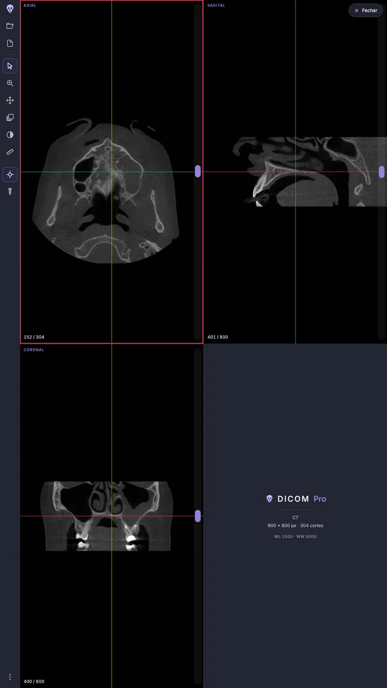
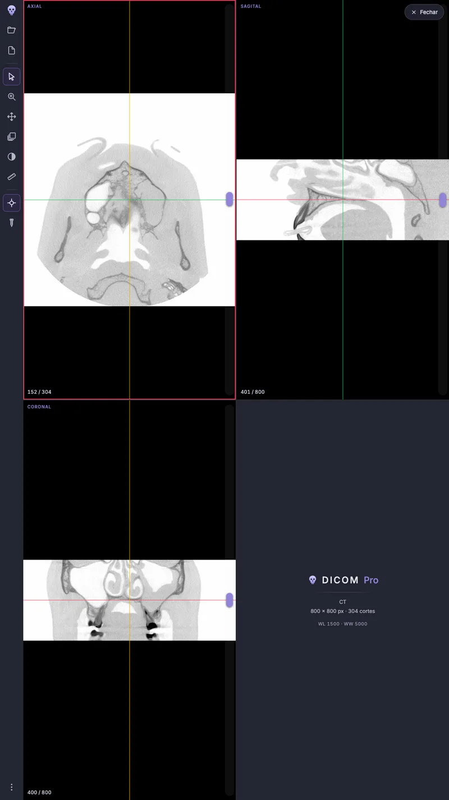
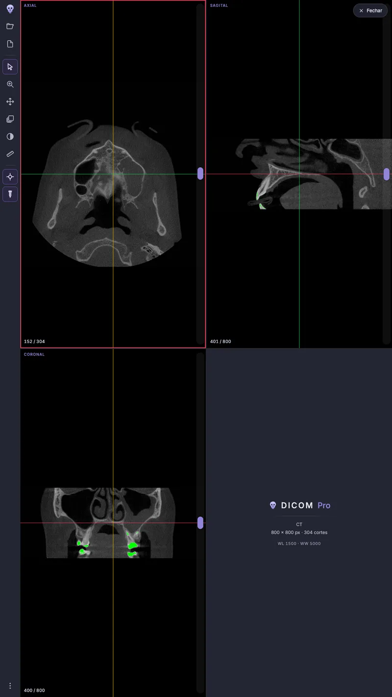
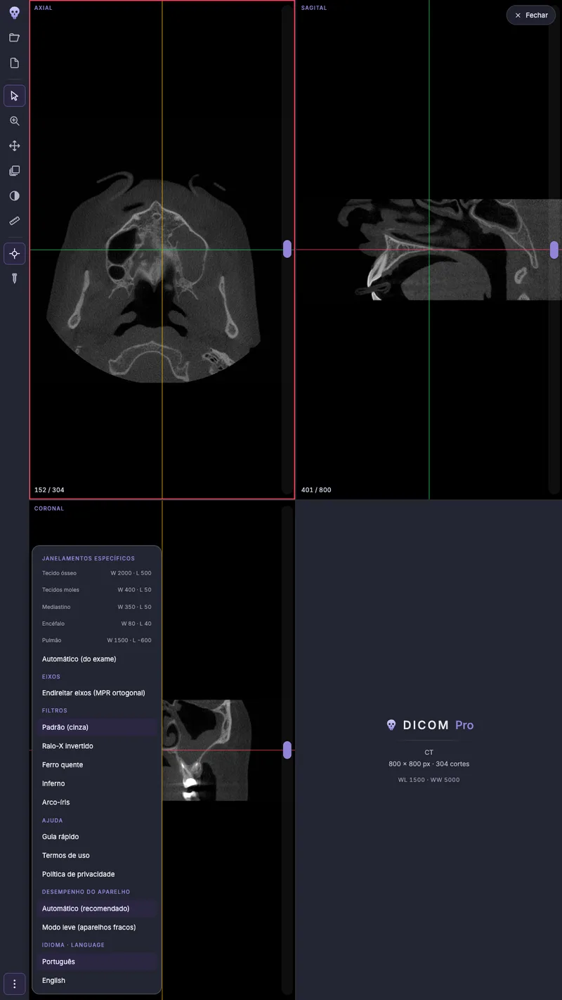
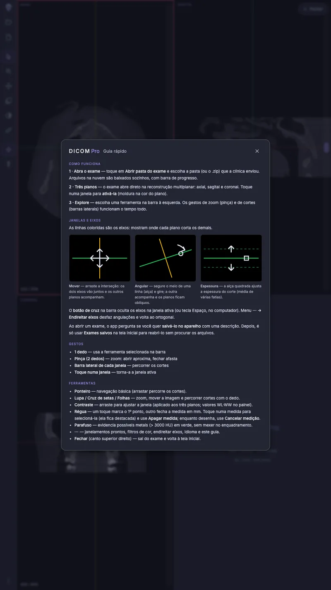

DICOM Pro
Visualizador de exames DICOM para ensino, estudo e referência — no seu tablet ou celular.
DICOM exam viewer for teaching, study and reference — on your tablet or phone.
Aviso · Notice
O DICOM Pro destina-se a ensino, estudo e referência. Não se destina a diagnóstico, laudo ou decisão clínica.
DICOM Pro is intended for teaching, study and reference. It is not intended for diagnosis, reporting or clinical decisions.
O que ele faz · What it does
- Reconstrução multiplanar (axial, sagital e coronal) com eixos móveis
- Medições em milímetros, janelamentos prontos e filtros de cor
- Realce de regiões de alta densidade
- Exames salvos no aparelho para reabrir em segundos
- Português e inglês · Guia ilustrado
As medidas em milímetros vêm da calibração do próprio exame — ver
Termos de Uso, item 3.
Measurements in millimeters come from the exam's own calibration — see Terms of Use, item 3.
Capturas · Screenshots
Telas do aplicativo em português, num aparelho de tela estreita. Toque numa captura para vê-la em tamanho maior. App screens in Portuguese, on a narrow-screen device. Tap a screenshot to see it larger.


Role para o lado para ver as cinco · Scroll sideways to see all five
Capturas em tamanho maior · Screenshots, larger
Aviso · Material educacional. O DICOM Pro destina-se a ensino, estudo e referência; não se destina a diagnóstico, laudo ou decisão clínica.
Notice · Educational material. DICOM Pro is intended for teaching, study and reference; it is not intended for diagnosis, reporting or clinical decisions.





Privacidade · Privacy
O app não envia dados para servidores da Oak Appware. Sem conta, sem nuvem do desenvolvedor, sem anúncios, sem rastreadores.
The app does not send data to Oak Appware servers. No account, no developer cloud, no ads, no trackers.